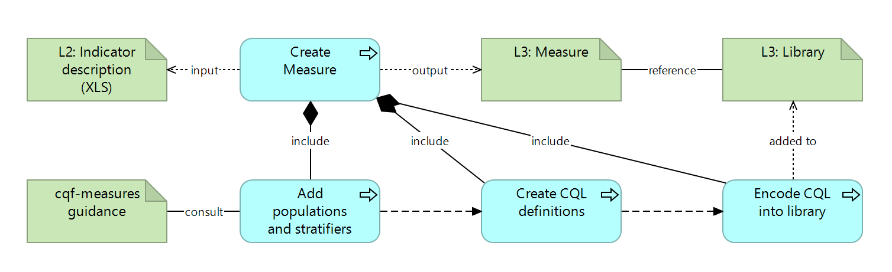

DRAFT SMART Guidelines L3 SOP
0.2.1 - CI Build

DRAFT SMART Guidelines L3 SOP
0.2.1 - CI Build

DRAFT SMART Guidelines L3 SOP, published by TBD. This guide is not an authorized publication; it is the continuous build for version 0.2.1 built by the FHIR (HL7® FHIR® Standard) CI Build. This version is based on the current content of https://github.com/WorldHealthOrganization/smart-ig-starter-kit and changes regularly. See the Directory of published versions
This specification utilizes a subset of ArchiMate notation to visually represent and structure the authoring processes. This distinguishes between the functional description (application layer) and the physical artifacts (technology layer).
This specification uses:
Application Layer: Offers a functional description, typically illustrating processes, functions, and services. This is represented by blue elements.
Technology Layer: Represents actual artifacts, like files, resource instances, or other data objects. This is represented by green elements.
The relations are represented by arrows
Aggregation: Illustrates that an object groups several other objects.
Composition: Indicates that an object is composed of one or more other objects, implying a stronger, “whole-part” relationship compared to aggregation.
Access (Read/Write): Indicates that a process has an artifact as input, or as output.
Related To: A generic relationship with a label specifying the nature of the connection.
Flows to: A relationship where an activity (process) is followed by another activity

The diagram above shows the process for creating an indicator:
- The input artifact is an L2 definition of an indicator (in a spreadsheet)
- The main process is to create an L3 Measure artifact
- To define the Measure, there’s a subprocess where the L3 author adds population and stratifiers, by consulting the cqf-measures-guidance.
- The next step (as part of the Create Measure process) is then to create CQL definitions
- Following that, the L3 author encodes CQL into libraries.
- The output of this is the L3 library that is referenced by the Measure resource
The diagrams capture the essence of transforming an L2 input into the corresponding L3 artifacts through processes. These processes can use different tooling or technologies; however the criteria for output and for process are defined.
To describe the content L3 authors are supposed to produce, the key content of the output artifacts is modeled with PlantUML diagrams. This discloses some of the intended structure, relationships, and attributes of the L3 artifacts.